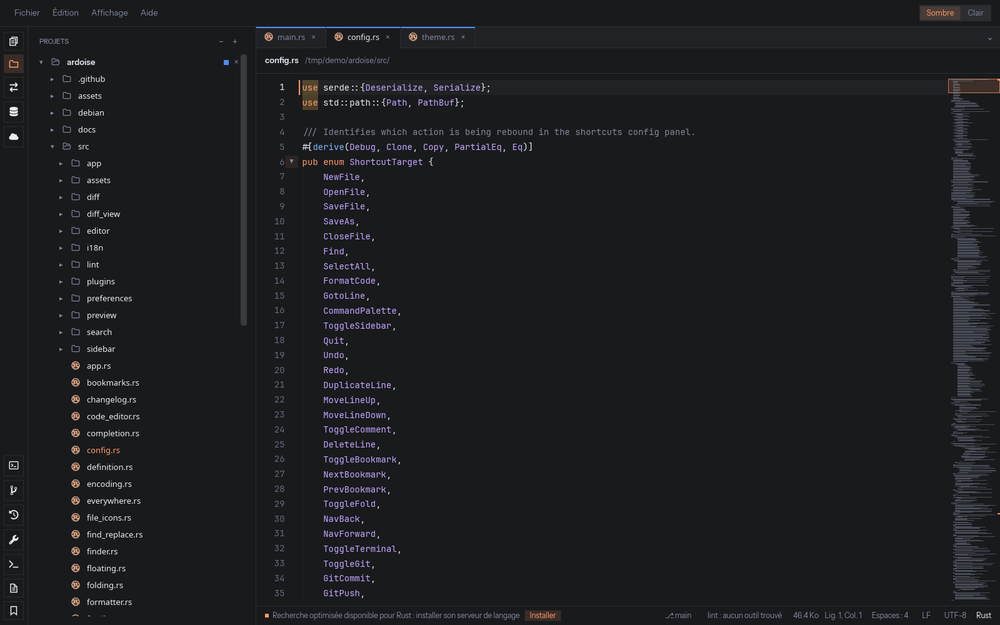
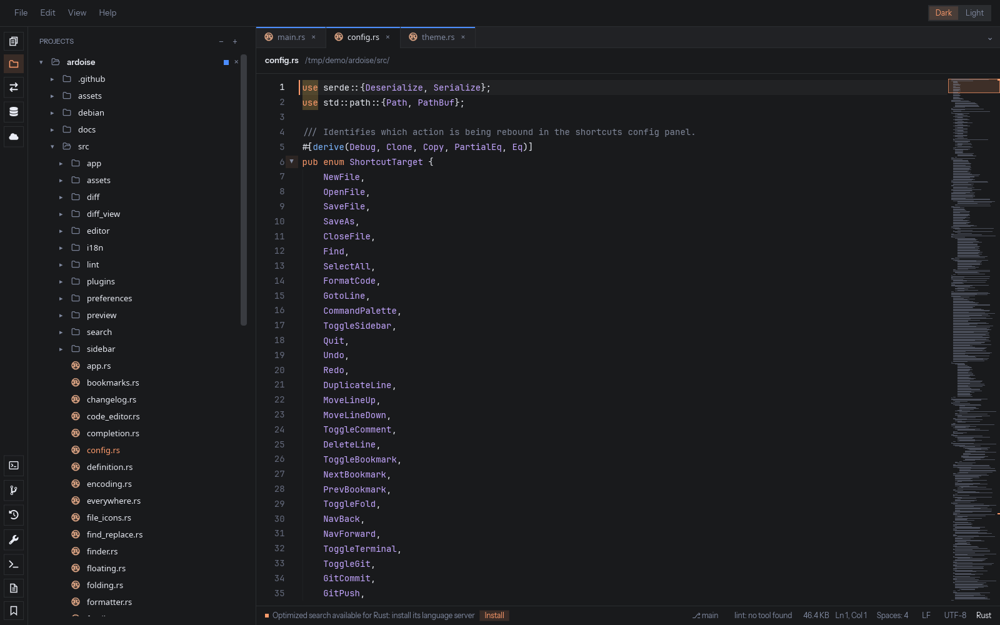
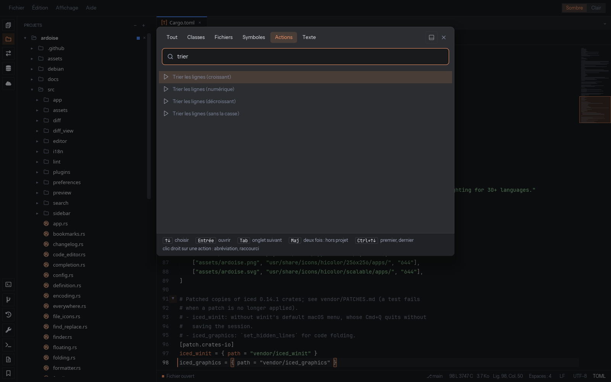
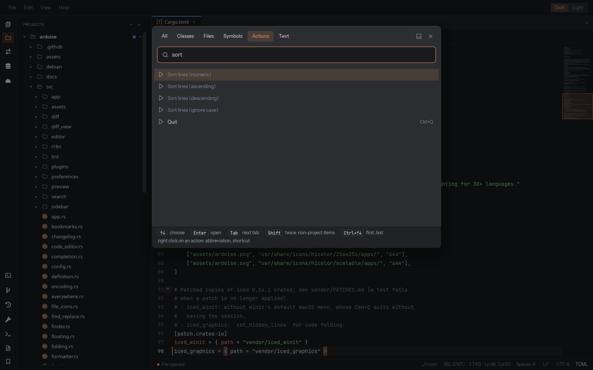

Prise en mainGetting started
L'interface, ouvrir des fichiers et des dossiers, les onglets et la ligne de commande.The interface, opening files and folders, tabs and the command line.
Le tour de la fenêtreA tour of the window
Ardoise tient en quelques zones : la barre de menus (Fichier, Édition, Affichage, Aide), la barre latérale avec ses panneaux (Fichiers, Projets, et ceux des plugins), la bande d'onglets, la zone d'édition avec sa marge (numéros de ligne, pliage, signets, marques Git) et sa minimap, et la barre d'état en bas (position du curseur, langage, indentation, encodage, fins de ligne).
Ardoise is a few areas: the menu bar (File, Edit, View, Help), the sidebar with its panels (Files, Projects, and those of plugins), the tab strip, the editing area with its gutter (line numbers, folding, bookmarks, Git marks) and its minimap, and the status bar at the bottom (cursor position, language, indentation, encoding, line endings).


La fenêtre entière avec un projet ouvert, où l'on distingue les menus, la barre latérale, les onglets, la marge, la minimap et la barre d'état.The whole window: menus, sidebar, tabs, gutter, minimap, status bar.
Capture à venirScreenshot to comeOuvrir des fichiers et des dossiersOpening files and folders
- Fichier › Ouvrir… (Ctrl O) ouvre un fichier ; plusieurs fichiers donnent un onglet chacun.File › Open… (Ctrl O) opens a file; several files give one tab each.
- Ajouter un projet (panneau Projets) place un dossier dans la barre latérale : son arbre se déplie, ses fichiers s'ouvrent d'un double-clic.Add project (Projects panel) puts a folder in the sidebar: its tree unfolds, its files open on double-click.
- Depuis le terminal :
ardoise chemin/fichier. Un fichier qui n'existe pas s'ouvre vide ; l'enregistrer le crée.From the terminal:ardoise path/file. A file that does not exist opens empty; saving creates it. - Les fichiers jusqu'à 64 Mo s'ouvrent, en UTF-8 ; fins de ligne (LF / CRLF) et retour final sont conservés.Files up to 64 MB open, as UTF-8; line endings (LF / CRLF) and the final newline are kept.
OngletsTabs
- Fermer Ctrl F4, Fermer les autres onglets, Fermer tous les onglets.Close Ctrl F4, Close other tabs, Close all tabs.
- Rouvrir l'onglet fermé : Ctrl Shift T.Reopen the closed tab: Ctrl Shift T.
- Le texte non enregistré est conservé d'un lancement à l'autre, y compris celui des onglets sans nom.Unsaved text is kept between runs, including that of untitled tabs.
EnregistrerSaving
Enregistrer Ctrl S, Enregistrer sous Ctrl Shift S, Tout enregistrer. Avec Préférences › Enregistrer automatiquement, les fichiers modifiés sont écrits quelques instants après la dernière frappe. Si un fichier a changé sur le disque, la barre d'état prévient que l'enregistrement écrasera ces changements ; s'il a été supprimé ou déplacé, il sera recréé.
Save Ctrl S, Save as Ctrl Shift S, Save all. With Preferences › Save files automatically, modified files are written a moment after you stop typing. If a file changed on disk, the status bar warns that saving will overwrite those changes; if it was deleted or moved, it will be recreated.
La palette de commandesThe command palette
Ctrl Shift A ouvre la recherche d'actions : toute commande du menu, et bien d'autres (trier les lignes, changer la casse, convertir l'indentation, choisir l'encodage…), avec leur raccourci quand il existe. Si vous ne savez pas où est une fonction, cherchez-la ici.
Ctrl Shift A opens the search for actions: every menu command, and many more (sort lines, change case, convert indentation, set the encoding…), with their shortcut when there is one. If you don't know where a function is, look for it here.


La recherche d'actions ouverte avec « trier » tapé : les actions de tri de lignes et leurs raccourcis.The search for actions open with “sort” typed: the line-sorting actions and their shortcuts.
Capture à venirScreenshot to comeAu premier lancementOn first launch
Une fenêtre d'accueil propose la langue, le thème, la taille du texte, l'enregistrement et le retour à la ligne, puis les plugins officiels à installer en un clic. Voir la page Installation.
A welcome window offers language, theme, text size, saving and wrapping, then the official plugins to install in one click. See the Install page.